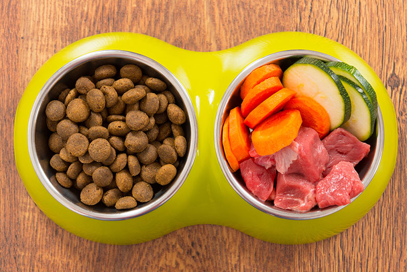

Pet Adoption
Pet adoption is the process of taking responsibility for a pet that a previous owner has abandoned to a shelter or rescue organization.Some organizations give adopters ownership of the pet, while others use a guardianship model wherein the organization retains some control over the animal's future use.
Some people have the pet euthanized, although many veterinarians do not consider this to be an ethical use of their resources for young and healthy animals, while others argue that euthanasia is a more humane option than leaving a pet in a cage for very long periods of time
Veterinary Medicines
Veterinary medicine is the branch of medicine that deals with the prevention, diagnosis and treatment of disease, disorder in non-human animals. The scope of veterinary medicine is wide, covering all animal species, both domesticated and wild, with a wide range of conditions which can affect different species.
Veterinary science helps human health through the monitoring and control of zoonotic disease (infectious disease transmitted from non-human animals to humans), food safety, and indirectly through human applications from basic medical research
Pet Food
Pet food is plant or animal material intended for consumption by pets. Typically sold in pet stores and supermarkets, it is usually specific to the type of animal, such as dog food or cat food. Most meat used for nonhuman animals is a byproduct of the human food industry, and is not regarded as "human grade".
Four companies—Procter & Gamble, Nestlé, Mars, and Colgate-Palmolive—are thought to control 80% of the world's pet-food market,[1] which in 2007 amounted to US$ 45.12 billion for cats and dogs alone.